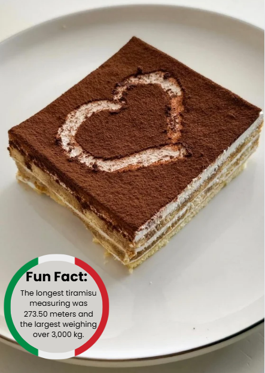

|  |
IngredientiCocoa powder Espresso Vanilla extract Eggs White sugar Salt Mascarpone cheese Heavy cream |
Ricetta-Whisk together the cocoa powder, espresso and vanilla in a bowl and set aside to really infuse the flavors together. - In a mixer or using a hand mixer, beat the egg yolks and sugar until pale and thick, about 5 minutes. -Add in the salt, mascarpone cheese and continue to whip until smooth. -Add the chilled cream and continue to whip, until light, creamy and smooth -Make sure it can hold a soft peak. -Dunk each ladyfinger in the espresso mixture to absorb the liquid and start to line a 7x11 oval baking dish with the cookies. -Top the first layer of cookies with ½ of the whipped mascarpone mixture and use the back of a metal spoon to spread it into an even layer. Dust with cocoa powder. -Repeat for another layer and then finish by dusting with cocoa powder on top. -Cover with plastic wrap and chill for at least 2 hours before serving. |